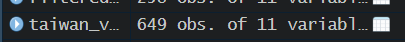

Code
install.packages("maptools", repos = "https://packagemanager.posit.co/cran/2023-10-13")Dengue Hemorrhagic Fever (in short dengue fever) is one of the most widespread mosquito-borne diseases in the most tropical and subtropical regions. It is an acute disease caused by dengue virus infection which is transmitted by female Aedes aegypti and Aedes albopictus mosquitoes. In 2015, Taiwan had recorded the most severe dengue fever outbreak with more than 43,000 dengue cases and 228 deaths. Since then, the annual reported dengue fever cases were maintained at the level of not more than 200 cases. However, in 2023, Taiwan recorded 26703 dengue fever cases. Figure below reveals that more than 25,000 cases were reported at Tainan City.

As a curious geospatial analytics green horn, you are interested to discover:
if the distribution of dengue fever outbreak at Tainan City, Taiwan are independent from space and space and time.
If the outbreak is indeed spatial and spatio-temporal dependent, then, you would like to detect where are the clusters and outliers, and the emerging hot spot/cold spot areas.
install.packages("maptools", repos = "https://packagemanager.posit.co/cran/2023-10-13")Installing the required tools for the analysis (e.g. sf, tidyverse, maptools, etc)
pacman::p_load(maptools, sf, raster, spatstat, tmap, tidyverse, arrow, lubridate, dplyr, spNetwork)This is where we import the data and prepare it before analysis``.
Let’s use st_read() of sf package to import these two geospatial data sets into R. And we will be using other functions to prepare our data upon importing them.
The 2 data sets are:
TAIWAN_VILLAGE_2020, a geospatial data of village boundary of Taiwan. It is in ESRI shapefile format. The data is in Taiwan Geographic Coordinate System. (Source: Historical map data of the village boundary: TWD97 longitude and latitude)
Dengue_Daily.csv, an aspatial data of reported dengue cases in Taiwan since 1998. (Source: Dengue Daily Confirmed Cases Since 1998. Below are selected fields that are useful for this study:
發病日: Onset date
最小統計區中心點X: x-coordinate
最小統計區中心點Y: y-coordinate
Firstly, we will import the data for the Taiwan Village Data
taiwan_village_sf <- st_read(dsn = "data/geospatial", layer = "TAINAN_VILLAGE")Let’s check the referencing system info of this taiwan_village_sf
st_crs(taiwan_village_sf)Currently, we have 649 rows of data in taiwan_village_sf.

Therefore, we have to filter the taiwan_village_sf for village level of D01, D02, D04, D06, D07, D08, D32, and D39 of the Tainan City, Taiwan
taiwan_village_sf <- st_transform(taiwan_village_sf, CRS=3414)
#filter the specific town ID from taiwan_village_sf
filtered_taiwan_village_sf <- taiwan_village_sf %>%
filter(TOWNID %in% c("D01", "D02", "D04", "D06", "D07", "D08", "D32", "D39"))Now, filtered_taiwan_village_sf will consist of 258 rows of data. This will help to reduce the amount of data that is needed to be processed in the later parts.

Since we’re happy with the dataset for filtered_taiwan_village_sf, let’s save it to a rds so that it would be easier for us to retrieve it in the future
write_rds(filtered_taiwan_village_sf, "data/rds/filtered_taiwan_village_sf.rds")Import the filtered_taiwan_village_sf rds data
filtered_taiwan_village_sf <- read_rds("data/rds/filtered_taiwan_village_sf.rds")Let’s visualise how filtered_taiwan_village_sf looks like when we plot it
tmap_mode("plot")
tm_shape(filtered_taiwan_village_sf) +
tm_dots()
Firstly, we will import the data for the Dengue Data
dengue_sf <- read_csv("data/aspatial/Dengue_Daily.csv")As dengue_sf consists of 106861 rows of data, with 26 types of variables, as shown below. Therefore we need to filter it

Let’s filter dengue_sf for fever cases that are confined to epidemiology week 31-50 of 2023, as well as the selected variables which we will be working with (發病日: Onset date, 居住縣市: County, 居住鄉鎮: Town, 居住村里: Village, 最小統計區中心點X: x-coordinate, 最小統計區中心點Y: y-coordinate)
# Filter the dataset for fever cases confined to epidemiology week 31-50, 2023
filtered_dengue_sf <- dengue_sf %>%
filter(發病日 >= "2023-07-31" & 發病日 <= "2023-12-17") %>%
select(發病日, 居住縣市, 居住鄉鎮, 居住村里, 最小統計區中心點X, 最小統計區中心點Y)In the code chunk above, we filtered the specific data that falls under the weeks that we are interested to look into. Moreover, we also use the “select” line to select the specific variables that we deemed useful for our research.
After filtering dengue_sf, and storing it in filtered_dengue_sf, the amount of data has reduced significantly from 106861 rows of data in dengue_sf, to 25480 rows of data in filtered_dengue_sf (with 3 types of variables).

Let’s check the data type of each variable before we proceed to performing left-join
str(filtered_dengue_sf)Since the X and Y coordinates are in string format, we need to convert it to numeric. This is the same for onset date where we need to convert it to date format.
# Convert the columns to numeric
filtered_dengue_sf$發病日 <- as.Date(filtered_dengue_sf$發病日)
filtered_dengue_sf$最小統計區中心點X <- as.numeric(filtered_dengue_sf$最小統計區中心點X)
filtered_dengue_sf$最小統計區中心點Y <- as.numeric(filtered_dengue_sf$最小統計區中心點Y)Since we’re happy with the dataset for filtered_taiwan_village_sf, let’s save it to a rds so that it would be easier for us to retrieve it in the future
write_rds(filtered_dengue_sf, "data/rds/filtered_dengue_sf.rds")Import the filtered_taiwan_village_sf rds data
filtered_dengue_sf <- read_rds("data/rds/filtered_dengue_sf.rds")Let’s perform a left-join to combine the variables in filtered_taiwan_village_sf and filtered_dengue_sf.
#taiwan_village_dengue <- left_join(filtered_taiwan_village_sf,
# filtered_dengue_sf,
# by = c("COUNTYNAME" = "居住縣市", "TOWNNAME" = #"居住鄉鎮", "VILLNAME" = "居住村里"),
# select(發病日, 最小統計區中心點X, 最小統計區中心點Y))Looking at our filtered_dengue_sf dataset, we can see that there is a long list of repetitive rows of data indicating each onset dates with their specific county, town and village names.

We can perform as count function to consolidate the number of onset cases based on the specific county, town and village names.
#onset_case_counts <- filtered_dengue_sf %>%
# group_by(發病日, 居住縣市, 居住鄉鎮, 居住村里) %>%
# summarize(case_count = n())Let’s save the sf as a df in the rds folder (for future reference)
Let’s import the rds for this exercise
{r} taiwan_village_df <- read_rds("data/rds/taiwan_village_df.rds")}